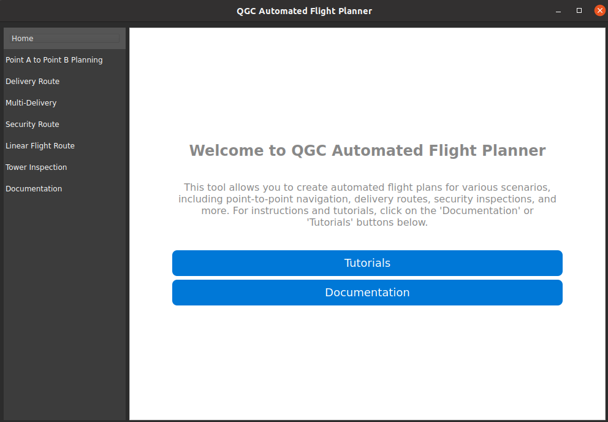

Introduction
Welcome to the QGC Automated Flight Planner documentation. This tool simplifies drone mission planning for point-to-point navigation, delivery routes, security patrols, and tower inspections. This is not a complete replacement for flight planning for the specific flight operation types, but is meant to eliminate a large amount of the work that goes into initially setting up the flight plan for each type. Please note that this software will be undergoing updates and be later released for operating systems not just Windows, Linux, and Mac. We are working on an Android release and a IOS release in the future once we clean up the user interface.
Installation (Linux/Ubuntu)
Follow these steps to set up the software:
Go to https://github.com/JamesM9/UASFlightGenerator.github.io/releases/tag/Alpha-initial
Download the UASFlightGenerator.exe file
Run the Setup After Download
Click on the Desktop icon to run the software.Getting Started
After installation, run the software and select a tool from the sidebar to begin.
Point A to Point B Planning
Plan direct flights between two coordinates either by entering the takeoff and landing location coordinates or by importing a flight path via a KML and having the waypoints track the KML path.
- Enter start and end coordinates.
- Select the aircraft type and set altitude preferences.
- Generate the
.planfile for QGroundControl.

Delivery Route
Create optimized routes for delivery missions. This is specifically for singular delivery aircraft flights where the aircraft delivers and returns or stays at the delivery location.
- Input start and end coordinates.
- Adjust altitude and landing behavior.
- Generate the
.planfile.
Multi-Delivery
Plan routes for multiple delivery locations. This tools does not set a limit to the amount of delivery locations. Therefore it is cautioned that when using this tool, you consider the distance and determine how much flight time it would take to complete the mission or the deliveries when using this tool. For this tool the delivery assumes that it will be a drop or lowering mechanism, you will need to edit the delivery waypoints if you are using a landing delivery method.
- Enter the start coordinates.
- Add multiple delivery points.
- Set altitude and generate the
.planfile.
Security Route
Generate flight plans for security patrols. There are two methods of security routes. Perimeter or Random. Perimeter matches the KML polygon file that was uploaded and move the flight path to the inside of the perimeter to match it. Random creates a random generated flight path that, depending on the number of waypoint selected, should cover the area inside of the loaded KML polygon. More waypoints means more coverage and is good for providing overwatch for targets.
- Load a KML file for route planning.
- Set altitude and number of waypoints.
- Generate and export the flight plan.
Linear Flight Route
Plan linear routes for flights over linear applications such as transmission lines, railways, roadways, and pipelines. You may still need to go into the mission when loaded to QGround Control and edit the waypoints to start the camera capture.
- Load a KML path file.
- Set waypoint intervals and altitude.
- Generate the
.planfile.
Tower Inspection
Plan routes for tower inspections with precise waypoints.
- Enter takeoff and landing coordinates.
- Input tower coordinates for inspection.
- Set the waypoint offset distance.
- Generate the flight plan.
Configuration
This section provides instructions on how to configure the mission planner for different aircraft types and the waypoints that will be used for each type. The mission planner supports the following aircraft configurations:
1. Multicopter/Helicopter
- Takeoff Command: Uses the TAKEOFF command (command 22) with a fixed altitude above the takeoff point.
- Waypoints:
- Waypoints are generated at a constant altitude above the terrain.
- The drone will follow a direct path between waypoints.
- The altitude is user-defined and remains constant throughout the mission.
- Landing Command: Uses the LAND command (command 21) to land at the specified landing coordinates.
2. Fixed Wing
- Takeoff Command: Uses the FIXED_WING_TAKEOFF command (command 22) with a specified pitch angle (e.g., 15 m/s) to initiate takeoff.
- Waypoints:
- Waypoints are generated at a constant altitude above the terrain.
- The drone will follow a smooth path between waypoints, maintaining a constant speed.
- The altitude is user-defined and remains constant throughout the mission.
- Landing Command: Uses the LAND command (command 21) or a Fixed-Wing Landing Pattern for a controlled descent and landing.
- The landing pattern includes a loiter point and an approach path to ensure a safe landing.
3. Quadplane/VTOL Hybrid
- Takeoff Command: Uses the VTOL_TAKEOFF command (command 84) to take off vertically.
- Waypoints:
- Waypoints are generated at a constant altitude above the terrain.
- The drone will transition between vertical and horizontal flight modes as needed.
- The altitude is user-defined and remains constant throughout the mission.
- Landing Command: Uses the VTOL_LAND command (command 85) to land vertically.
- The drone will transition from horizontal flight to vertical descent before landing.
Waypoint Configuration
The mission planner generates waypoints based on the following parameters:
- Altitude Above Terrain: The altitude is specified in either feet or meters. The drone will maintain this altitude above the terrain throughout the mission.
- Waypoint Interval: The distance between waypoints is specified in either meters or feet. Smaller intervals result in more waypoints and a smoother flight path.
- Geofence Buffer: A buffer zone around the flight path is specified in either meters or feet. This ensures the drone stays within a safe distance from obstacles or restricted areas.
- Delivery Actions: For delivery missions, you can specify whether the drone should release a payload using a gripper mechanism or land at the delivery location and take off again.
- Final Action: After completing the mission, the drone can either land at the final delivery location or return to the takeoff location and land.
Example Configurations
Multicopter/Helicopter Example
- Takeoff: 10 feet above the takeoff point.
- Waypoints: 50 meters apart, 100 feet above the terrain.
- Landing: Land at the final waypoint.
Fixed Wing Example
- Takeoff: 15 m/s pitch angle, 100 feet above the takeoff point.
- Waypoints: 100 meters apart, 200 feet above the terrain.
- Landing: Use a fixed-wing landing pattern with a loiter radius of 75 meters.
Quadplane/VTOL Hybrid Example
- Takeoff: Vertical takeoff, 50 feet above the takeoff point.
- Waypoints: 75 meters apart, 150 feet above the terrain.
- Landing: Vertical landing at the final waypoint.
Troubleshooting
- Invalid Coordinates: Ensure that coordinates are entered in the correct format (lat, lon).
- No Waypoints Generated: Check that the KML file contains valid path data or that the start and end coordinates are correctly entered.
- Altitude Issues: Ensure that the altitude is set high enough to avoid terrain obstacles.
Support
Need help? Contact us at versauas@gmail.com for support. Please note that this is an open-source project currently in development. If you encounter any issues, we encourage you to report them so we can improve the software. You can submit an issue ticket for tracking on The project issue github page for more direct notification to the developer(s) and tracking.